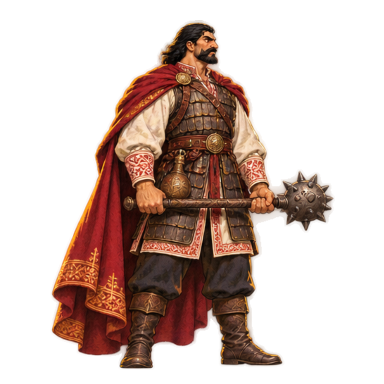
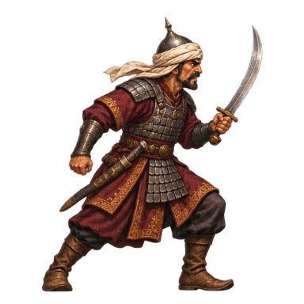
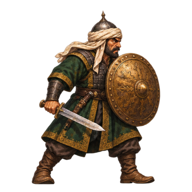
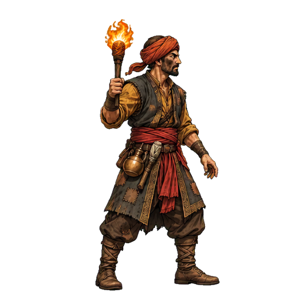
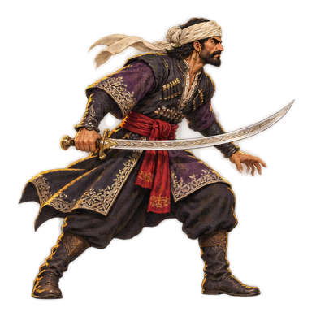
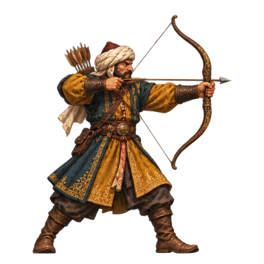
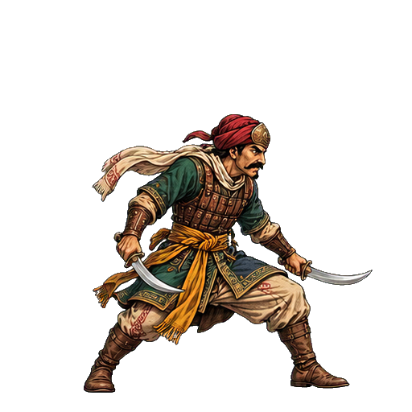
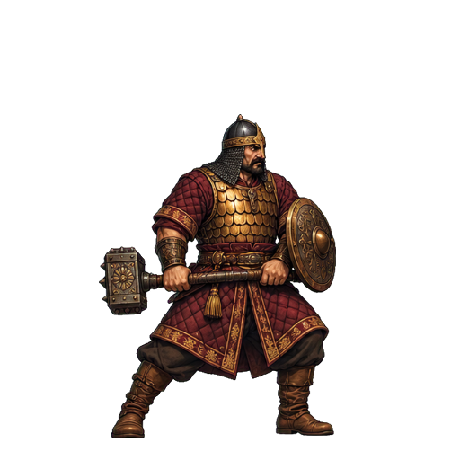

MARKO · BIBLIOTEKA ANIMACIJA / 03 · OPISI I ŠABLONI
Pokret i borba kao u The Lost Crown
32 klipova, 182 kadrova u 10 tema. Svaki klip ima zahtev za sprite-gen, prompt sa opisom kadar po kadar, šablon rasporeda (512×512 polja) i referentnu sliku lika. Ništa još nije nacrtano i igra nije menjana.
Postupak (isti kao paket 02): generator slika dobija prompts/motion.txt + base-source.png + šablon → sačuvaj red kao raw/motion.png → sprite-gen extract, compose-atlas, compose-gif → u igri razmera po veličini glave (build-sprite-rig.py).
1 · Markovo mirovanje

Zamenjuje statičnu sliku dok Marko stoji. Petlja 10 FPS.
- 1 miran stav, topuz spušten u desnoj ruci
- 2 udah: grudi se šire, ramena se dižu
- 3 vrh udaha, ogrtač se blago njiše nazad
- 4 izdah, težina prelazi na prednju nogu
- 5 glava se kratko okreće ka posmatraču
- 6 prsti stežu dršku topuza, pogled napred
- 7 ogrtač se smiruje
- 8 povratak u poziciju 1, bez skoka
2 · Niz od 3 laka udarca

J (1. pritisak). Pogodak na kadru 3. Kadrovi 5–6: prozor za sledeći J.
- 1 gard, topuz kod kuka
- 2 kratak zamah unazad u visini ramena
- 3 brz vodoravan udarac napred u visini grudi — KONTAKT
- 4 topuz prolazi preko tela, trup zarotiran
- 5 oporavak, topuz kod levog ramena
- 6 poza iz koje kreće drugi udarac

J (2. pritisak). Pogodak na kadru 3. Kadrovi 5–6: prozor za treći J.
- 1 topuz kod levog ramena (nastavak prvog udarca)
- 2 korak napred, kukovi se okreću
- 3 povratni udarac dijagonalno nadole s leva na desno — KONTAKT
- 4 topuz nisko desno
- 5 diže topuz ka desnom ramenu
- 6 spreman za završni udarac

J (3. pritisak), završni udarac. Pogodak na kadru 4 sa talasom prašine.
- 1 obe ruke hvataju dršku, topuz iza glave
- 2 mali odskok, telo se izvija unazad
- 3 vrh: topuz visoko iznad glave, kolena savijena
- 4 snažan udar nadole u tlo ispred — KONTAKT, čučanj
- 5 topuz zariven u tlo, ogrtač pada
- 6 ispravljanje u gard
3 · Kolut za izmicanje

Shift. Kolut traje ~0,4 s; neranjiv od kadra 2 do 4.
- 1 nagnut napred, kreće u kolut
- 2 rame dodiruje tlo, ogrtač obavija telo
- 3 kolut: leđa ka tlu, kolena uz grudi, topuz uz telo
- 4 izlazi iz koluta u čučanj
- 5 klečeći se diže
- 6 nastavlja u trk, jedna noga ispred
4 · Marko: primljen udarac, pad i ustajanje

Lak pogodak (bez obaranja).
- 1 udarac u grudi: glava i ramena trznu nazad
- 2 korak nazad, slobodna ruka štiti telo
- 3 stabilizuje se, stisnutih zuba
- 4 vraća se u gard

Jak udarac (Musa, oklopnik, eksplozija). Kadar 5 se drži dok ne ustane.
- 1 snažan pogodak: telo savijeno nazad, stopala se odvajaju od tla
- 2 leti unazad vodoravno, ogrtač leprša
- 3 pada leđima na tlo
- 4 klizi po leđima
- 5 leži na leđima, topuz pored ruke
- 6 leži, glava se podiže

Posle pada; kadrovi 1–3 neranjiv.
- 1 leži na leđima
- 2 oslanja se na lakat
- 3 na jedno koleno
- 4 ustaje oslanjajući se na topuz
- 5 stoji pognut, hvata dah
- 6 gard
5 · Kontra posle savršenog odbijanja

Posle savršenog L. Usporenje 0,3 s na kadru 4; pogoci na kadrovima 4 i 7.
- 1 savršeno odbijanje: topuz vodoravno ispred lica
- 2 protivnikovo oružje odbačeno, okret u kukovima
- 3 korak unutra, topuz nisko iza
- 4 aperkat: topuz udara odozdo nagore — KONTAKT
- 5 topuz visoko iznad glave, telo ispruženo
- 6 okret za drugi udarac
- 7 vodoravni udarac — KONTAKT 2
- 8 junačka poza, topuz na ramenu
6 · Udar topuzom nadole iz skoka

Dole + J u skoku. Kadar 3 se drži dok ne dodirne tlo; pogodak i talas na kadru 4.
- 1 u vazduhu, obe ruke dižu topuz iza glave
- 2 telo se savija napred, topuz iznad
- 3 pada nadole, topuz okrenut ka tlu
- 4 udar u tlo: čučanj, topuz zariven — KONTAKT
- 5 kleči, oslanja se na topuz
- 6 ustaje u gard
7 · Trzaj na udarac (svi protivnici)

Svaki pogodak koji ne ubija; zamenjuje proceduralni nagib.
- 1 trzaj glave nazad, kraj turbana leti
- 2 korak nazad, sablja spuštena
- 3 povija se, drži se za stomak
- 4 vraća se u stav

Svaki pogodak koji ne ubija; zamenjuje proceduralni nagib.
- 1 udarac kroz štit: štit odbačen u stranu
- 2 posrće nazad
- 3 hvata ravnotežu, štit nisko (otvoren gard)
- 4 diže štit

Svaki pogodak koji ne ubija; zamenjuje proceduralni nagib.
- 1 trzaj, luk izbačen iz pozicije
- 2 korak nazad
- 3 povijen
- 4 vraća luk u ruke

Svaki pogodak koji ne ubija; zamenjuje proceduralni nagib.
- 1 trzaj, sablje razbacane u stranu
- 2 odskače nazad na prste
- 3 čučne i trese glavom
- 4 ponovo u nizak stav

Svaki pogodak koji ne ubija; zamenjuje proceduralni nagib.
- 1 jedva se pomera: ramena trznu, oklop zvekne
- 2 zanese se pola koraka
- 3 štit nisko, otvoren
- 4 vraća se u težak stav

Svaki pogodak koji ne ubija; zamenjuje proceduralni nagib.
- 1 trzaj, baklja zamahne
- 2 posrće nazad
- 3 kašlje, povijen
- 4 diže baklju

Svaki pogodak koji ne ubija; zamenjuje proceduralni nagib.
- 1 veliki trzaj, zareži od bola
- 2 korak nazad, sablja nisko
- 3 stisne zube, pogled pun besa
- 4 vraća se u stav
8 · Hod/trk i smrt novih protivnika

Kretanje akindžije; korak ~90 px po ciklusu.
- 1 kontakt desnom nogom, telo nisko nagnuto, sablje unazad
- 2 odraz, šal leti
- 3 let, obe noge od tla
- 4 kontakt levom nogom
- 5 odraz
- 6 let, povratak u kadar 1

Smrt; poslednji kadar leži ceo na tlu (kao postojeće smrti).
- 1 pogođen, sablje ispadaju
- 2 pada na kolena
- 3 pada unazad
- 4 udara o tlo
- 5 leži
- 6 nepomičan

Težak hod oklopnika; korak ~70 px po ciklusu.
- 1 težak korak desnom, štit napred
- 2 prenosi težinu
- 3 čekić na ramenu se zanese
- 4 težak korak levom
- 5 prenosi težinu
- 6 povratak u kadar 1

Smrt; oklop zvekne o tlo.
- 1 pogođen, kleči na jedno koleno
- 2 oslanja se na čekić
- 3 čekić klizi
- 4 pada na stranu
- 5 štit se otkotrlja
- 6 leži nepomičan

Trk palikuće sa bakljom visoko.
- 1 kontakt desnom, baklja visoko
- 2 odraz
- 3 let
- 4 kontakt levom
- 5 odraz
- 6 let, povratak u kadar 1

Smrt; baklja pada pored i gori dalje.
- 1 pogođen, baklja ispada
- 2 posrće
- 3 pada unazad
- 4 udara o tlo
- 5 leži, baklja gori pored
- 6 nepomičan
9 · Mirovanje protivnika

Petlja dok protivnik stoji (zamenjuje statičnu sliku).
- 1 stav sa sabljom, disanje, sablja se blago pomera, kraj turbana leprša — kadar 1
- 2 stav sa sabljom, disanje, sablja se blago pomera, kraj turbana leprša — kadar 2
- 3 stav sa sabljom, disanje, sablja se blago pomera, kraj turbana leprša — kadar 3
- 4 stav sa sabljom, disanje, sablja se blago pomera, kraj turbana leprša — kadar 4
- 5 stav sa sabljom, disanje, sablja se blago pomera, kraj turbana leprša — kadar 5
- 6 stav sa sabljom, disanje, sablja se blago pomera, kraj turbana leprša — kadar 6

Petlja dok protivnik stoji (zamenjuje statičnu sliku).
- 1 štit ispred, viri preko štita, diše — kadar 1
- 2 štit ispred, viri preko štita, diše — kadar 2
- 3 štit ispred, viri preko štita, diše — kadar 3
- 4 štit ispred, viri preko štita, diše — kadar 4
- 5 štit ispred, viri preko štita, diše — kadar 5
- 6 štit ispred, viri preko štita, diše — kadar 6

Petlja dok protivnik stoji (zamenjuje statičnu sliku).
- 1 luk spušten, proverava strelu, gleda napred — kadar 1
- 2 luk spušten, proverava strelu, gleda napred — kadar 2
- 3 luk spušten, proverava strelu, gleda napred — kadar 3
- 4 luk spušten, proverava strelu, gleda napred — kadar 4
- 5 luk spušten, proverava strelu, gleda napred — kadar 5
- 6 luk spušten, proverava strelu, gleda napred — kadar 6

Petlja dok protivnik stoji (zamenjuje statičnu sliku).
- 1 poskakuje na prstima, vrti sablju — kadar 1
- 2 poskakuje na prstima, vrti sablju — kadar 2
- 3 poskakuje na prstima, vrti sablju — kadar 3
- 4 poskakuje na prstima, vrti sablju — kadar 4
- 5 poskakuje na prstima, vrti sablju — kadar 5
- 6 poskakuje na prstima, vrti sablju — kadar 6

Petlja dok protivnik stoji (zamenjuje statičnu sliku).
- 1 težak dah, čekić na ramenu, štit oslonjen — kadar 1
- 2 težak dah, čekić na ramenu, štit oslonjen — kadar 2
- 3 težak dah, čekić na ramenu, štit oslonjen — kadar 3
- 4 težak dah, čekić na ramenu, štit oslonjen — kadar 4
- 5 težak dah, čekić na ramenu, štit oslonjen — kadar 5
- 6 težak dah, čekić na ramenu, štit oslonjen — kadar 6

Petlja dok protivnik stoji (zamenjuje statičnu sliku).
- 1 baklja treperi, nervozno gleda okolo — kadar 1
- 2 baklja treperi, nervozno gleda okolo — kadar 2
- 3 baklja treperi, nervozno gleda okolo — kadar 3
- 4 baklja treperi, nervozno gleda okolo — kadar 4
- 5 baklja treperi, nervozno gleda okolo — kadar 5
- 6 baklja treperi, nervozno gleda okolo — kadar 6

Petlja dok protivnik stoji (zamenjuje statičnu sliku).
- 1 prezrivo diše, sablja preko ramena — kadar 1
- 2 prezrivo diše, sablja preko ramena — kadar 2
- 3 prezrivo diše, sablja preko ramena — kadar 3
- 4 prezrivo diše, sablja preko ramena — kadar 4
- 5 prezrivo diše, sablja preko ramena — kadar 5
- 6 prezrivo diše, sablja preko ramena — kadar 6
10 · Ivica i zid

Hvatanje ivice i penjanje. Šake na istoj visini (ivica) u kadrovima 2–6; topuz okačen o pojas.
- 1 skok, ruka ispružena ka ivici gore desno
- 2 hvata ivicu jednom rukom
- 3 visi, noge slobodne
- 4 druga ruka hvata ivicu
- 5 povlači se nagore, lakat preko ivice
- 6 koleno na ivici
- 7 ustaje na ivici
- 8 stoji, uzima topuz

Klizanje niz zid i skok od zida. Zid se ne crta; zid je desno od Marka.
- 1 klizi niz zid desno, ruka i stopalo na zidu
- 2 klizanje, ogrtač se diže
- 3 skuplja se uz zid
- 4 odraz nogom od zida, telo kreće ulevo
- 5 u vazduhu, okrenut ULEVO
- 6 vrh skoka okrenut ulevo